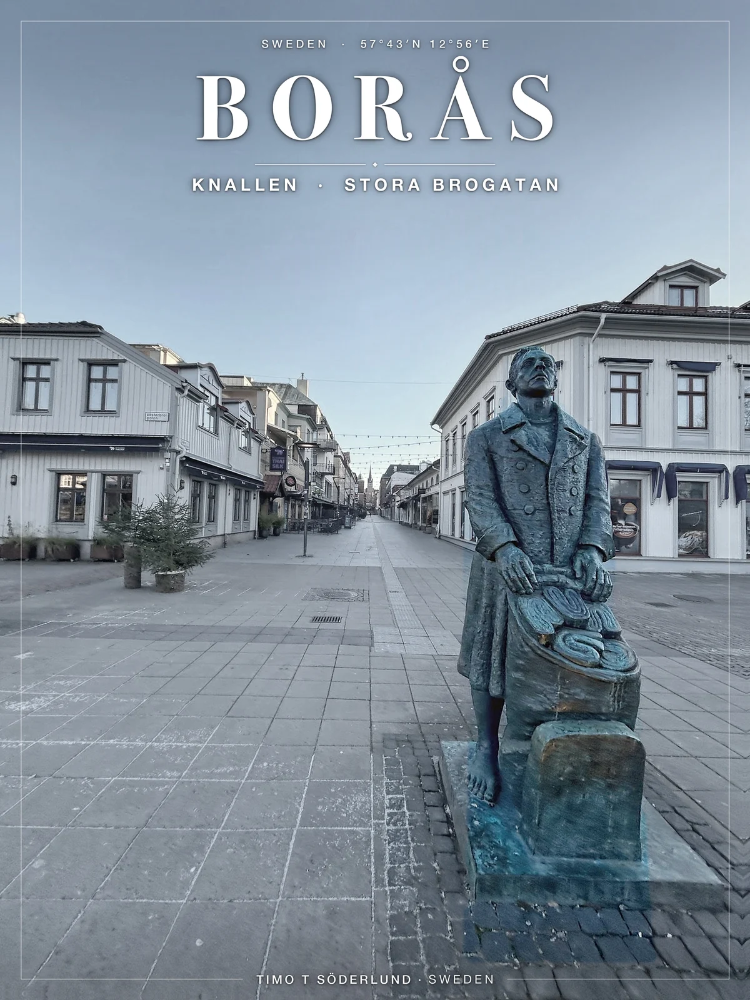

Knallen · Stora Brogatan (Morning Light)
Bronze Sculpture by Arvid Knöppel (1947) · Stora Brogatan, Borås, Sweden
English
Standing barefoot at Stora Brogatan 1 in quiet early morning light, Swedish sculptor Arvid Knöppel's bronze sculpture Knallen (1947) honors the historic travelling merchants of the Sjuhärad region who carried textiles and crafts across Sweden. Originally unveiled outside Borås's former post office in 1952, the work was relocated to its present place on Stora Brogatan in 2009. Here, the verdigris-patinated figure rests his hands on his pack as the empty pedestrian street runs all the way up to the spire of Gustav Adolf Church in Borås, Sweden. Photographed and finished in a muted Nordic museum palette by Timo T Söderlund for Borås Poster Project 2026.
Svenska
Barfota vid Stora Brogatan 1 i stilla morgonljus står skulptören Arvid Knöppels bronsskulptur Knallen från 1947, skapad som en hyllning till Sjuhäradsbygdens historiska gårdfarihandlare. Skulpturen avtäcktes ursprungligen utanför det gamla posthuset i Borås 1952 och flyttades 2009 till sin nuvarande plats vid Stora Brogatan. Med händerna vilande på sin packning reser sig den ärggröna bronsfiguren mot den folktomma gågatan som sträcker sig hela vägen upp till Gustav Adolfs kyrka i centrala Borås. Fotograferad och bearbetad i dämpad nordisk museiton av Timo T Söderlund för Borås Poster Project 2026.
Photographer & Edition: Timo T Söderlund · Borås, Sweden (2026)